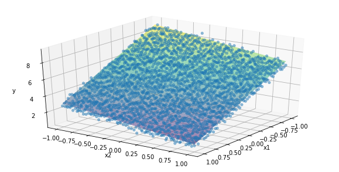
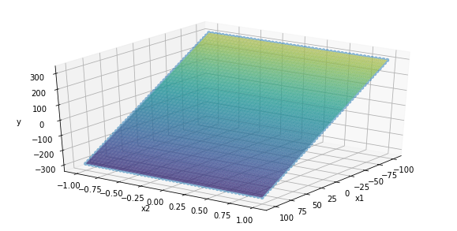
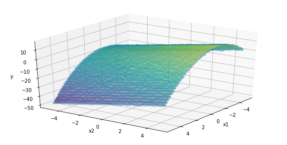
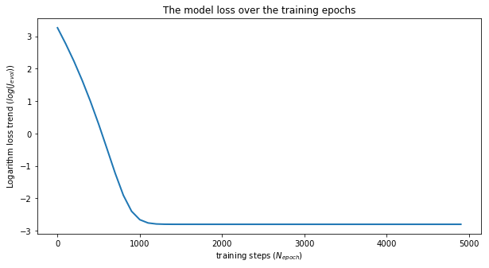
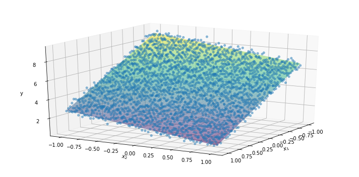

1. Introduction
We have introduced the concept of the linear-regression problem and the structure to solve it in a “machine-learning” fashion in this post, while we have applied the theory to a simple but practical case of linear-behaviour identification from a bunch of data that are generated in a synthetic way here and extend the analysis to a multi-linear case where more than one feature (or input) are fed to the model to predict the outcome here.
We now face the implementation process with popular libraries available in the Python framework, namely Sklearn and Tensorflow.
Scikit-learn is a free software machine learning library for the Python programming language. It enables fast implementation of several classification, regression and clustering algorithms including support vector machines, random forests, gradient boosting and k-means, and is designed to interoperate with the Python numerical and scientific libraries NumPy and SciPy.
TensorFlow is an open-source software library for dataflow programming across a range of tasks. It is a symbolic math library, and is mainly employed for machine learning applications and more recently deep learning modeling. It is developed by the Google Brain team.
Code-wise, such libraries let developers focus more on the model itself and achieving an overall better performance by optimizing the model hyper-parameters and by combining different models to deliver an ensemble version out of it.
We are going to implement the logic in Scikit-learn (SKL) first and then in Tensorflow (TF) in this post, while the next one treats fundamental aspects of machine learning theory, such as feature scaling, feature augmentation, via techniques such as polynomial features, and hypothesis evaluation.
2. Data generation
We are going to build three datasets:
- A multi-linear model of two inputs.
- A multi-linear model of two inputs, where one input outscales the other one.
- A multi-linear model of two inputs, where one of them represents polynomial features.
2.1 A multi-linear model of two inputs
We start generating some synthetic data (Npntx*Npnty=50*50 points).
We assume we know both the slope of the two inputs ($ \omega_1 = 3, \omega_2 = -1 $) and the intercept ($ \omega_0 = 5 $) of the plane we want to identify, but we also introduce some noise with a gaussian distribution and zero-mean to the plane to make the data source a bit closer to real-world scenarios.
The chart shows the generated data cloud (see this post for further details).
Here follows the mathematical expression of the model:
$$ y = \omega_0 + \omega_1\cdot x_1 + \omega_2\cdot x_2 $$
import numpy as np
import matplotlib.pyplot as plt
%matplotlib inline
import pandas as pd
from mpl_toolkits import mplot3d
Npntx, Npnty = 50, 50 # number of points
x1_ = np.linspace(-1, 1, Npntx)
x2_ = np.linspace(-1, 1, Npnty)
xx1, xx2 = np.meshgrid(x1_, x2_)
noise = 0.25*(np.random.randn(Npnty,Npntx)-1)
w0, w1, w2 = 5, -3, -1
yy = w0 + w1*xx1 + w2*xx2 + noise
zz = w0 + w1*xx1 + w2*xx2
visData1 = [xx1, xx2, yy, [w0, w1, w2]]
plt.figure(figsize=(10, 5))
ax = plt.axes(projection='3d')
ax.plot_surface(xx1, xx2, zz, rstride=1, cstride=1, cmap='viridis', edgecolor='none', alpha=0.5)
ax.scatter(xx1, xx2, yy, cmap='viridis', linewidth=0.5, alpha=0.5)
plt.xlabel("X1")
plt.ylabel("X2")
plt.ylabel("Y")
ax.set_xlabel('x1')
ax.set_ylabel('x2')
ax.set_zlabel('y')
ax.view_init(30, 35)
plt.show()

The dataset is generated by creating two 2D arrays, one for inputs and one for outputs.
The input array, XX, is the horizontal concatenation of the flattened version of the two input arrays, xx1 and xx2.
There is no need to add the column filled with 1s, as we had to do in the Numpy implementation.
We first stack the two 1D arrays vertically and then transpose it to get the examples (50*30=1500) over the rows and the features over the columns (2).
The output 2D array is just a single column filled with the y values. Here the shape of the arrays.
XX1 = np.vstack((xx1.flatten(), xx2.flatten())).T
YY1 = yy.flatten().reshape(-1,1)
print([XX1.shape, YY1.shape])
[(2500, 2), (2500, 1)]
2.2 A multi-linear model of two inputs, where one input outscales the other one
We generate some synthetic data (Npntx*Npnty=50*50 points), but we make sure one input maximum value is far greater than the other one. In particular, x1 scales from -1000 to 1000, while x2 from -1 to 1.
However, the mathematical correlation does not change:
$$ y = \omega_0 + \omega_1\cdot x_1 + \omega_2\cdot x_2 $$
In a real-life task, it is common to face such situations. Credit risk management is one example, where some inputs to the model could be how many employees work for the company that should take the loan, and the annual revenue. The order of magnitude of the latter is way too greater than the former, in general.
You can see in the below chart how the second input looks like to have no impact on the outcome of the model.
Npntx, Npnty = 50, 50 # number of points
x1_ = np.linspace(-100, 100, Npntx)
x2_ = np.linspace(-1, 1, Npnty)
xx1, xx2 = np.meshgrid(x1_, x2_)
noise = 0.25*(np.random.randn(Npnty,Npntx)-1)
w0, w1, w2 = 2, -3, -1
yy = w0 + w1*xx1 + w2*xx2 + noise
zz = w0 + w1*xx1 + w2*xx2
visData2 = [xx1, xx2, yy, [w0, w1, w2]]
plt.figure(figsize=(10, 5))
ax = plt.axes(projection='3d')
ax.plot_surface(xx1, xx2, zz, rstride=1, cstride=1, cmap='viridis', edgecolor='none', alpha=0.5)
ax.scatter(xx1, xx2, yy, cmap='viridis', linewidth=0.5, alpha=0.5)
plt.xlabel("X1")
plt.ylabel("X2")
plt.ylabel("Y")
ax.set_xlabel('x1')
ax.set_ylabel('x2')
ax.set_zlabel('y')
ax.view_init(30, 35)
plt.show()

The dataset is generated with the same procedure.
XX2 = np.vstack((xx1.flatten(), xx2.flatten())).T
YY2 = yy.flatten().reshape(-1,1)
print([XX2.shape, YY2.shape])
[(2500, 2), (2500, 1)]
2.3 A multi-linear model of two inputs, where one of them represents polynomial features.
We generate some synthetic data (Npntx*Npnty=50*50 points), where the first feature x1 shows off as a quadratic function.
The mathematical correlation is as follows:
$$ y = \omega_0 + \omega_1\cdot x_1 + \omega_2\cdot x_1^2 + \omega_3\cdot x_2 $$
In real-life task, it is common to face such situations. Joule heating is one example, where the heat released by a light bulb is correlated to the square of the electric current through the wires.
You can see in the below chart how the first input is responsible for the curvature of the generated surface.
Npntx, Npnty = 50, 50 # number of points
x1_ = np.linspace(-5, 5, Npntx)
x2_ = np.linspace(-5, 5, Npnty)
xx1, xx2 = np.meshgrid(x1_, x2_)
noise = 0.25*(np.random.randn(Npnty,Npntx)-1)
w0, w1, w2, w3 = 2, -3, -1, 2
yy = w0 + w1*xx1 + w2*xx1**2 + w3*xx2 + noise
zz = w0 + w1*xx1 + w2*xx1**2 + w3*xx2
visData3 = [xx1, xx2, yy, [w0, w1, w2, w3]]
plt.figure(figsize=(10, 5))
ax = plt.axes(projection='3d')
ax.plot_surface(xx1, xx2, zz, rstride=1, cstride=1, cmap='viridis', edgecolor='none', alpha=0.5)
ax.scatter(xx1, xx2, yy, cmap='viridis', linewidth=0.5, alpha=0.5)
plt.xlabel("X1")
plt.ylabel("X2")
plt.ylabel("Y")
ax.set_xlabel('x1')
ax.set_ylabel('x2')
ax.set_zlabel('y')
ax.view_init(30, 35)
plt.show()

The dataset is generated with the same procedure.
XX3 = np.vstack((xx1.flatten(), xx1.flatten()**2, xx2.flatten())).T
YY3 = yy.flatten().reshape(-1,1)
print([XX3.shape, YY3.shape])
[(2500, 3), (2500, 1)]
3. Linear regression with Scikit-learn
We import the module required to define the linear model, LinearRegression, from the linear_model package, and the module to evaluate the performance of the model, RMSE, from the metrics package.
It is enough to fit the model parameters to the first dataset and to calculate the model prediction for the inputs of each sample of the same dataset.
We can realize (and appreciate) how the overall code ends up being much more compact and easier to write and maintain.
from sklearn.linear_model import LinearRegression
from sklearn.metrics import mean_squared_error
lm = LinearRegression()
lm.fit(XX1, YY1)
Ypred = lm.predict(XX1)
print('The final RSME is : {}'.format(mean_squared_error(YY1, Ypred)))
print('The final parameter values: {}'.format(np.hstack((lm.intercept_, lm.coef_[0,:])).tolist()))
The final RSME is : 0.060867550456315374
The final parameter values: [4.753763678286057, -3.001900368199036, -1.0124158793115567]
xx1, xx2, yy = visData1
ypred = Ypred.reshape(-1, xx1.shape[-1])
plt.figure(figsize=(10, 5))
ax = plt.axes(projection='3d')
ax.plot_surface(xx1, xx2, ypred, rstride=1, cstride=1, cmap='viridis', edgecolor='none', alpha=0.5)
ax.scatter(xx1, xx2, yy, cmap='viridis', linewidth=0.5, alpha=0.5)
ax.set_xlabel('$x_1$')
ax.set_ylabel('$x_2$')
ax.set_zlabel('y')
ax.view_init(20, 30)
plt.tight_layout()
plt.show()
In three lines of Python code, we are now able to perform what requires a lot of effort and coding when starting from scratch.
4. Linear regression with TensorFlow
We import the entire library, from which we access to the various methods required to describe the model, to train it to the dataset and to estimate the outputs that are compared to the dataset ground-truth values.
4.1 Model definition
The very first step is to reset the TF to the default graph, which means TF clears the default graph stack and resets the global default graph.
We then define the x and y variables as placeholder, while the ww parameters as variable.
In short, tf.Variable is used for trainable parameters of the model, while tf.placeholder is used to feed actual training examples.
That’s why we need to assign initial values, often random-generated, to the TF variables only.
The variable values can therefore be updated during optimization, can be shared and be stored after training.
We assign the placeholder type as float32 to both input and output.
The size of the input placeholder, xp, is set to (None, 2), since the number of rows is automatically determined from the batch size we feed to the optimizer object in the training step, while the column size is equal to the number of features (2 for the first case).
The size of the output placeholder is instead set to (None, 1), since only one value is required for each sample.
The feature weights ww and bias bb, which is equivalent to the Sk-Learn intercept, are defined with the Variable method and initialized as a (2,1) and a (1,1) zero-arrays, respectively.
The final step is to combine TF variables and placeholders to translate the mathematical model into code.
The matrix multiplication between the input matrix and the weight array is performed with matmul.
At the end of these steps, we inspect the shape of each tensor.
The question-mark symbol says that TF needs some data to determine the actual row size.
import tensorflow as tf
tf.reset_default_graph()
xp = tf.placeholder(dtype=tf.float32, shape=(None, 2))
yp = tf.placeholder(dtype=tf.float32, shape=(None, 1))
ww = tf.Variable(np.zeros((2,1)), dtype=tf.float32)
bb = tf.Variable(np.zeros((1,1)), dtype=tf.float32)
ymdl = tf.matmul(xp, ww) + bb
print('Input shape: {}'.format(xp.shape))
print('Ground-truth output shape: {}'.format(yp.shape))
print('Weight shape: {}'.format(ww.shape))
print('Model output shape: {}'.format(ymdl.shape))
Input shape: (?, 2)
Ground-truth output shape: (?, 1)
Weight shape: (2, 1)
Model output shape: (?, 1)
The loss function is easily implemented using the method mean_squared_error from losses package.
The optimizer object that actually adjusts the model parameters (TF variables) with the gradient descent algorithm.
mdlLoss = tf.losses.mean_squared_error(yp, ymdl)
optimizer = tf.train.AdamOptimizer(learning_rate=0.01).minimize(loss=mdlLoss)
4.2 Model training
The next steps are to:
1. initialize the variables.
2. run a new session, which let us perform the actual computation by exploiting the graph structure previously defined.
3. run the optimizer as many steps as the number of epochs Nepoch.
4. run the model with the final parameter set and store the model output ymdl into the prediction array.
5. retrieve the final parameter values by running a dedicated session. A different way would be to call the global_variables() method and get the variable values by key name.
Nepoch = 5000
init = tf.global_variables_initializer()
with tf.Session() as sess:
sess.run(init)
Jevol = []
for kk in range(Nepoch):
mdl_loss, _ = sess.run([mdlLoss, optimizer], feed_dict={xp: XX1, yp: YY1})
if kk%100 == 0:
Jevol.append((kk, mdl_loss))
if kk==Nepoch-1:
print('The final model loss is {}'.format(mdl_loss))
Ypred_tf = sess.run(ymdl, feed_dict={xp: XX1})
bOpt, wOpt = sess.run([bb, ww])
The final model loss is 0.0608675591647625
Jevol = np.array(Jevol)
plt.figure(figsize=(10, 5))
plt.plot(Jevol[:,0], np.log(Jevol[:,1]), lw=2)
plt.xlabel("training steps ($N_{epoch}$)")
plt.ylabel("Logarithm loss trend ($log(J_{evol})$)")
plt.title('The model loss over the training epochs')
plt.show()

print('The final RSME is : {}'.format(mean_squared_error(YY1, Ypred_tf)))
print('The final parameter values: {}'.format(np.vstack((bOpt, wOpt))[:,0].tolist()))
The final RSME is : 0.060867550351984094
The final parameter values: [4.753759384155273, -3.001899242401123, -1.012415885925293]
xx1, xx2, yy = visData1
ypredTF = Ypred_tf.reshape(-1, xx1.shape[-1])
plt.figure(figsize=(10, 5))
ax = plt.axes(projection='3d')
ax.plot_surface(xx1, xx2, ypredTF, rstride=1, cstride=1, cmap='viridis', edgecolor='none', alpha=0.5)
ax.scatter(xx1, xx2, yy, cmap='viridis', linewidth=0.5, alpha=0.5)
ax.set_xlabel('$x_1$')
ax.set_ylabel('$x_2$')
ax.set_zlabel('y')
ax.view_init(20, 30)
plt.tight_layout()
plt.show()
